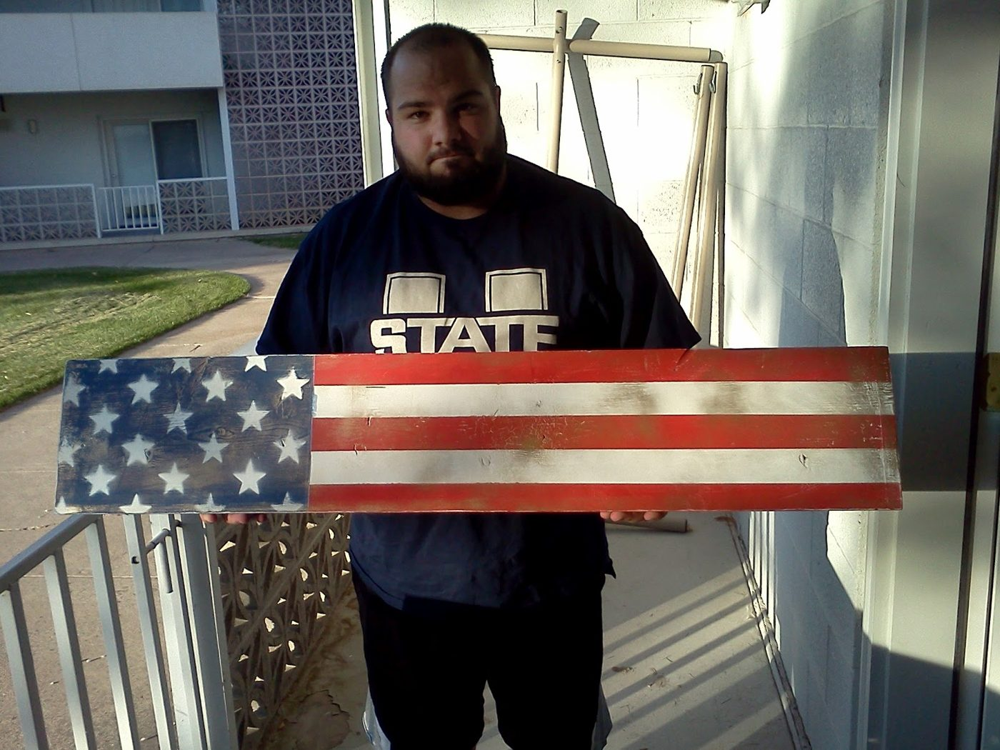

Navarre made a thing!
I made a thing! I was feeling particularly crafty, and I was also feeling like our apartment lacked a certain patriotic flare, so I made a thing!
I bought a piece of wood from the DI for about $3 (it totally has something on the back!) Spray painted first white, then the blue field. After that I made a star stencil by tracing my actual flag, cutting the stencil, then painting the white stars over the blue field.
Once the blue was done, I sprayed on the red stripes. I wanted to do a gold, cloudy border, but I screwed it up. So I ended up going with the 'rustic' look. Sprayed more gold cloud across the front of the board, and sanded the heck out of the whole thing, very artistically. It turned out a lot better than I expected. So I hung it up above the mirror by our front door.
I'm a quote junkie, so I had planned on doing letter stenciling to add a phrase, or maybe vinyl lettering, but I liked how it turned out and maybe I'll do some lettering on a different project. The idea for this project was to have the mirror by the front door so you see yourself as you walk out, then being reminded how to act by the phrase. Here were the options:
"What e'er thou art, act well they part!"
"Return With Honor"
"In memory of our God, our religion, and freedom, and our peace, our wives, and our children"
In other news, at this very time, my hair was getting WAAAYY out of hand, as you can see here:
So I had Catherine cut it. She did an excellent job!
 |
| I am clearly VERY excited about this! |
{kind=link}
{kind=link}
Once the blue was done, I sprayed on the red stripes. I wanted to do a gold, cloudy border, but I screwed it up. So I ended up going with the 'rustic' look. Sprayed more gold cloud across the front of the board, and sanded the heck out of the whole thing, very artistically. It turned out a lot better than I expected. So I hung it up above the mirror by our front door.
{kind=link}
{kind=link}
I'm a quote junkie, so I had planned on doing letter stenciling to add a phrase, or maybe vinyl lettering, but I liked how it turned out and maybe I'll do some lettering on a different project. The idea for this project was to have the mirror by the front door so you see yourself as you walk out, then being reminded how to act by the phrase. Here were the options:
"What e'er thou art, act well they part!"
"Return With Honor"
"In memory of our God, our religion, and freedom, and our peace, our wives, and our children"
In other news, at this very time, my hair was getting WAAAYY out of hand, as you can see here:
| I'll kick you outta my home if you don't CUT THAT HAIR! |
So I had Catherine cut it. She did an excellent job!
| Pictured: No Longer a Hooligan. |